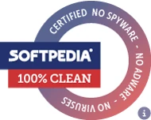

로그가 생기는 그 순간에 봅니다.
.NET 10 / WPF로 만든 빠르고 현대적인 Windows 로그 뷰어. 실시간 추적, 독립된 탭, 정규식 강조 규칙, 분할 창 비교, 앞뒤 문맥 미리보기 — 16개 언어로 제공합니다.
모든 다운로드는 검증할 수 있습니다
Standalone과 Portable 다운로드에는 타임스탬프가 포함된 디지털 서명이 있습니다. 모든 릴리스는 version.json에 SHA-256을 함께 공개하며, 앱은 HTTPS로 업데이트를 설치하기 전에 이를 대조합니다. 변조된 파일은 자동으로 거부됩니다.

저희 말만 믿으실 필요는 없습니다. Softpedia Labs가 독립적으로 검사해 100% Clean — 스파이웨어·애드웨어·바이러스 없음 — 을 부여했습니다.tail -f에 있었으면 했던 것들, 전부.
.log만이 아닙니다 — 어떤 텍스트 로그든
리눅스와 유닉스의 로그는 형태가 제각각입니다. syslog, messages, 로테이션된 auth.log.1, 확장자가 아예 없는 파일까지. 파일 이름 패턴만 주면 일치하는 텍스트 파일을 모두 따라갑니다 — 바이너리는 알아서 건너뜁니다.
실시간 로그 추적
로그 파일을 실시간으로 따라갑니다 — 새 줄이 즉시 들어옵니다. 위로 스크롤하면 멈추고, 맨 아래로 돌아가면 다시 이어집니다.
독립된 탭
탭마다 각자의 작업 공간입니다. 로그 구성, 분할, 검색, 정렬을 따로 가집니다. 여러 프로젝트를 섞지 않고 동시에 지켜볼 수 있습니다.
분할 창 비교
독립된 두 창에 두 파일을 나란히 — 각각 자기 검색과 자기 추적을 가집니다.
.csv를 열로 추적
.csv/.tsv도 표로 보여 줍니다 — 파일의 머리글이 열 제목이 되고 새 행이 실시간으로 나타납니다. 쉼표, 세미콜론, 탭은 자동으로 인식합니다.
정규식 강조 규칙
줄 전체든 단어 하나든 색을 입힙니다. 단어 경계 도우미와 실시간 미리보기를 제공합니다.
앞뒤 문맥 미리보기
걸러진 줄 위에 마우스를 올리면, 거르기 전 파일에서 그 앞뒤 줄을 살짝 보여 줍니다.
자동 업데이트 내장
Standalone과 Portable은 스스로 업데이트합니다 — HTTPS로 무결성을 확인합니다.
16개 언어
인터페이스 전체가 번역되어 있고 즉시 전환됩니다 — 다시 시작할 필요가 없습니다.
깔끔하고, 촘촘하고, 키보드로 편합니다.


16개 언어, 바로 전환됩니다.
몇 문장이 아니라 인터페이스 전체입니다 — 언제든지, 다시 시작하지 않고 언어를 바꿀 수 있습니다.
사용 방법
설치하거나 압축을 풉니다
클릭 한 번의 ClickOnce, 아주 작은 standalone .exe, 또는 단독으로 도는 포터블 버전.
로그가 있는 곳을 알려 줍니다
폴더나 파일을 추가하세요. 파일 이름 패턴에 맞는 로그를 골라내고, 바이너리는 건너뛰고, 계속 지켜봅니다.
실시간으로 봅니다
강조 규칙이 적용된 채로 줄이 실시간으로 흐릅니다. 나누고, 찾고, 거릅니다.
버전을 고르세요
실행하는 방법이 세 가지 — 모두 무료이고, 같은 앱입니다.
ClickOnce
클릭 한 번으로 설치되고 스스로 최신 상태를 유지합니다. 대부분에게 가장 좋은 선택입니다.
Standalone
약 2.5 MB짜리 .exe 하나. .NET 10 Desktop Runtime이 설치되어 있어야 합니다.
Portable
단독으로 도는 약 160 MB .exe. 런타임도 설치도 필요 없이 — 어디서든 실행됩니다.
Standalone과 Portable 다운로드에는 디지털 서명이 있어 Windows가 게시자 이름을 보여 줍니다. 서명이 최근 것이라 브라우저나 Windows가 여전히 확인을 요구할 수 있습니다: 추가 정보 → 실행을 누르세요. 원하시면 릴리스마다 공개되는 SHA-256을 대조해 보실 수 있습니다.
질문
정말 무료인가요?
예 — 프리웨어이며 개인용과 상업용 모두 가능합니다. 계정도 쿠키도 없습니다. 앱이 보내는 것은 익명의 설치·업데이트 통계뿐이고, 그것도 끌 수 있습니다.
열 때 Windows가 확인을 요구합니다. 왜 그런가요?
서명이 최근 것이고, Windows가 새 게시자를 알아보는 데에는 시간이 걸립니다 — 파일의 문제가 아닙니다. 추가 정보 → 실행을 누르세요. ClickOnce 설치는 자체 서명을 쓰기 때문에 여전히 "알 수 없는 게시자"로 보일 수 있습니다. 모든 릴리스에는 확인할 수 있는 SHA-256이 함께 공개됩니다.
어떤 버전을 골라야 하나요?
신경 쓰지 않고 자동 업데이트를 원하면 ClickOnce(Microsoft Edge 필요). .NET 10 런타임이 이미 있으면 Standalone. 아무것도 설치하고 싶지 않으면 Portable.
소스 코드는 어디에 있나요?
앱은 프리웨어이고 소스는 비공개입니다. 다만 버그 제보와 기능 제안은 GitHub에서 언제든 환영합니다.